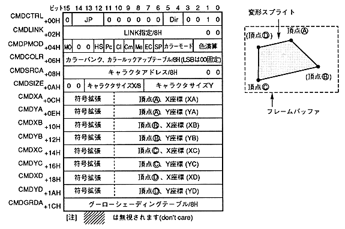

The modified sprite drawing command draws the character pattern in the frame buffer. When drawing, you can draw by specifying the vertical and horizontal flips, scaling, stretching, rotating, and twisting the character pattern.
変 形 Deformed sprite drawing command when the end bit is 0B and the command selection bit is 0010B.
The contents of the command table are as follows.

The deformation sprite drawing command is defined as follows
- If the end bit is set to 0B and the command selection bit is set to 0010B, it becomes a modified sprite drawing command.
- Specify the jump format. When the jump format is assign or call, divide the address of the command table to be processed next by 8H and set to CMDLINK.
- Set the character pattern reading direction. You can draw by flipping upside down or left and right by specifying the reading direction. If the inversion is specified twice by specifying the readout direction and specifying the vertex (A), vertex (B), vertex (C), or vertex (D), the inversion is canceled and the original state is restored.
- Set high speed shrink. Specify accuracy priority or speed priority.
- Set pre-clipping. Specify valid or invalid considering the clipping area and drawing position of the part.